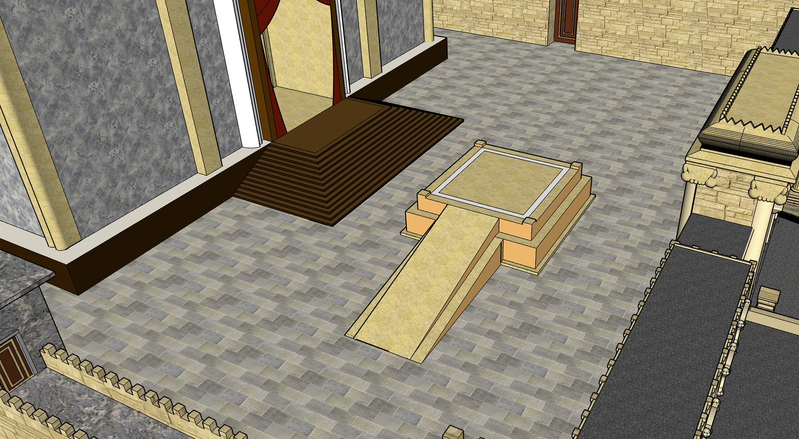
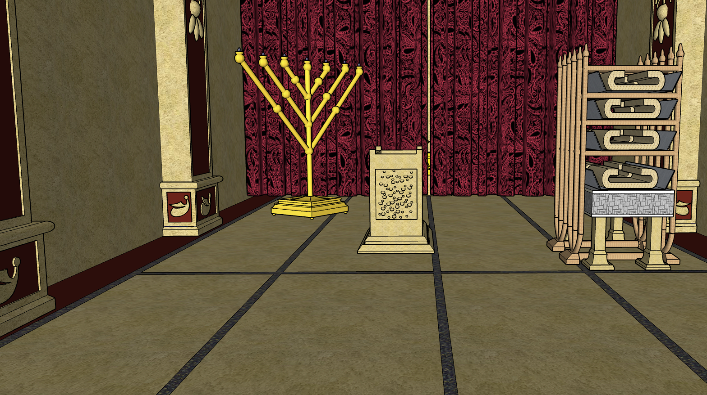
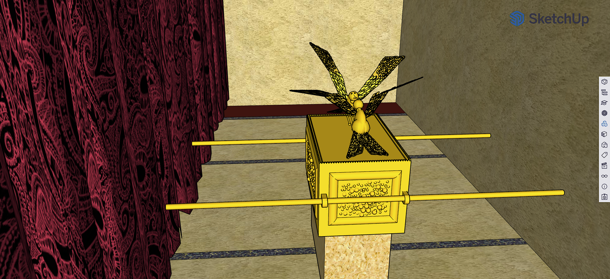

שלום וברוכים הבאים לדף המידע למבקרים עבור בית המקדש השני!
בית המקדש השני שבירושליים הוא בית המקדש שבנה הורדוס במהלך שלטונו ביהודה בשביל עם ישראל.
רבים טוענים שבית המקדש הזה הוא המפואר מבין השניים, אבל ניתן לכם לבקר ולהחליט בעצמכם.
המזבח שנקרא גם מזבח העולה (נקרא ככה כדי להבדילו ממזבח הקטורת שבתוך היכל בית המקדש) היה חלק קדוש בפולחן העברי המזבח נקרא גם מזבח החיצון כי נמצא מחוץ להיכל בית המקדש 
ההיכל היה חדר בבית המקדש הממוקם בין הדביר לאולם שימושו היה להכיל את רוב כלי הקודש העיקריים המנורה שהודלקה כל יום בערב עד הבוקר שולחן שעליו הונח לחם הפנים והוחלף כל שבת ומזבח הזהב או מזבח הקטורת עליו היו מקטרים קטורת ומזים מהחטאות הפנימיות 
הדביר או קודש הקודשים היה החדר החשוב ביותר בבית המקדש הוא הכיל בתוכו את ארון הברית ובתוכו את לוחות הברית. על הארון היו הכפורת והכרובים מעליה.בצד הארון הונחו צנצנת המן ומטה הארון. הכניסה הייתה מותרת רק לכהן הגדול ביום הכיפורים מלבד למקרים מיוחדים 